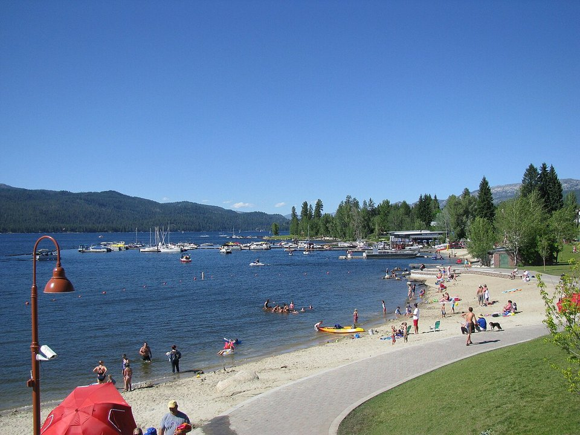

Payette Lake · Resort
Shore Lodge
A lakefront lodge with a spa, marina and fine dining.
Official details for Shore LodgeA lake town at the edge of the backcountry.
McCall sits on the shore of Payette Lake in Idaho’s central mountains, and to pilots it is the jumping-off point for the Frank Church backcountry and its legendary airstrips. Land at McCall Municipal, stay at Shore Lodge on the water, bike the old-growth pines of Ponderosa State Park, paddle the lake, and in winter see the ice sculptures of the McCall Winter Carnival.

We’re flying ourselves there in a small airplane.
Where we’re staying Dinner Things to do The plan
Your pilot handles the flight planning and weather; this page is for the fun part. Pilot view
Time illustration: direct distance at 150 KTAS plus 15 minutes for departure and arrival, matching the discovery page. Use ForeFlight for your actual flight plan.
Check the weekend weather at both ends → Flight category, your minimums and the crosswind on the best runway.
More in Aviation & getting around below. Crew cars change often: call the FBO before you go. How to have a rental car waiting at the FBO · Know something we missed? Tell us.
KMYL, McCall Municipal, is a non-towered city airport at 5,024 feet with a 6,101-foot runway, about five minutes from downtown and the lake.
McCall Municipal Airport, McCall, ID
Another FBO: Dew Aircraft (208-634-4088). The U.S. Forest Service smokejumpers practice parachute jumps near the airport. Landing and parking fees are collected by a third party; see mccallairport.com. The parallel taxiway is closed December to April. No live fuel price is shown.
Mountain flying: high density altitude on summer afternoons, mountain wave and strong winds over the ridges, afternoon thunderstorms from July to September, wildfire smoke in late summer, and winter snow and icing. Consider a mountain-flying course before you go. About 1840 nm from Myrtle Beach: two long days each way with several fuel stops. Plan a week, or overnight on the way out and back.
Rates and availability need travel dates. Book early for summer and the Winter Carnival.
A lakefront lodge with a spa, marina and fine dining.
Official details for Shore LodgeA small hotel steps from the lake and downtown.
Official details for Hotel McCallCabins and lake rentals.
Visit McCall for More places to stayPrices and availability for your dates, through our partner Stay22. This is an affiliate link: we may earn a commission at no cost to you. The picks above are never paid.
Reserve weekend dinners.
Steaks and lake views at the lodge.
Official details for Shore Lodge restaurantsLocal ales and pub food downtown.
Official details for McCall Brewing CompanyRestaurants in McCall.
Visit McCall for More restaurantsBackcountry strips need training and current local knowledge.
This prototype links to the local visitor site. It does not yet match events to your travel dates.
Ice sculptures, a parade and fireworks.
Visit McCall for McCall Winter CarnivalThe best flying and paddling weather.
Visit McCall for Lake and backcountry seasonBrundage Mountain.
Brundage for Ski seasonCheck the local calendar when choosing a weekend, and confirm dates and tickets with the organizer.
A sample McCall weekend. This is a two-day flight each way; plan a week. No bookings or availability confirmed.
Land at KMYL mid-morning.
Lunch in town.
A short walk, then back to the airport.
Land at KMYL, subject to weather, density altitude and your actual flight plan.
Walk downtown and the lakeshore.
Dinner at McCall Brewing.
Bike Ponderosa State Park.
Paddle Payette Lake.
Dinner at Shore Lodge.
Coffee by the lake.
Compute takeoff performance and allow time at the FBO.
Mountain afternoons bring wind, turbulence and storms; leave early.
The main sight.
Explore.
Dinner in town.
These details make the difference between an appealing list and a usable getaway.
Lodging first.
About 1,840 nm from Myrtle Beach: two long days each way.
Get training before flying the Idaho strips.
June to September, and Winter Carnival.
Picks and links reviewed by WingAway Weekends. Hours, prices, menus and availability change often, so confirm directly with each place before booking. Spotted something out of date, or have a favorite we missed? Email us at hello@wingawayweekends.com.
WingAway Weekends helps you discover the destination. Use ForeFlight and current official aviation information for route, performance, weather, NOTAMs and preflight decisions. Flight planning and PIC responsibility stay with the pilot.